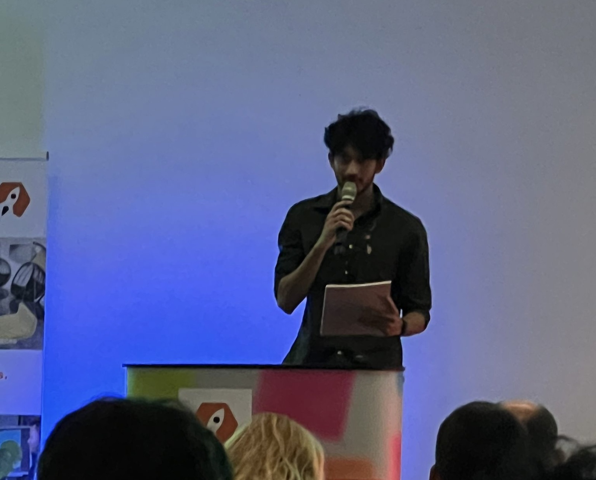
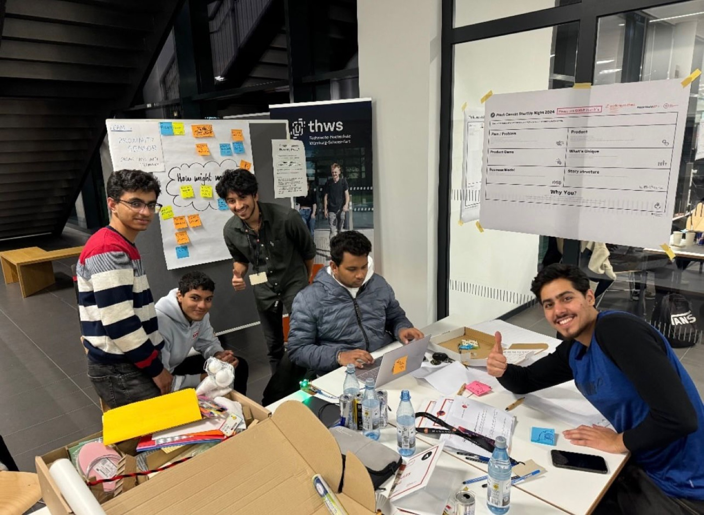

Campus Startup Night 2024
Werkraum, THWS. With my team, Proximity Sensor, I pitched a low-cost collision-warning retrofit for older cars that have no driver-assistance systems. It was built on my ML Automotive Safety prototype.
Most cars on the road will never get a factory collision-warning system. The idea: bolt one on.
Rear-end collisions are among the most common crashes, and they often come down to reaction time. New cars ship with forward-collision warning, but older vehicles don't, and a factory upgrade isn't an option. My idea was a retrofit kit: a camera running YOLOv8 plus an ultrasonic sensor. It estimates the distance and closing speed of the car ahead, then shows a green, yellow or red alert when you get closer than a safe braking distance.
Werkraum is the THWS start-up community. I've been an active project member since October 2023, working on startup ideas and team-based innovation challenges.

Old cars, no ADAS
Millions of vehicles have no forward-collision warning, and rear-end crashes are often decided by a second of reaction time.
A bolt-on safety kit
Camera + ultrasonic sensor + microcontroller that warns before the gap becomes unsafe.
YOLOv8 + sensor fusion
Vision estimates distance from box width. Ultrasound measures the gap directly. The Berkeley PATH model sets the warning distance.
Affordable safety
Safety for the cars that need it most, without buying a new car.


The night was structured around a pitch canvas: problem, product, demo, what's unique, business model, story and "why you".